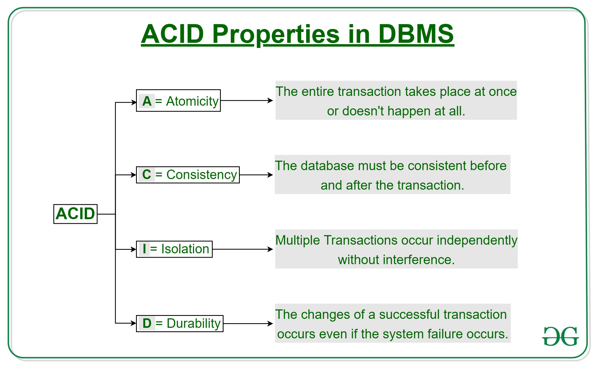
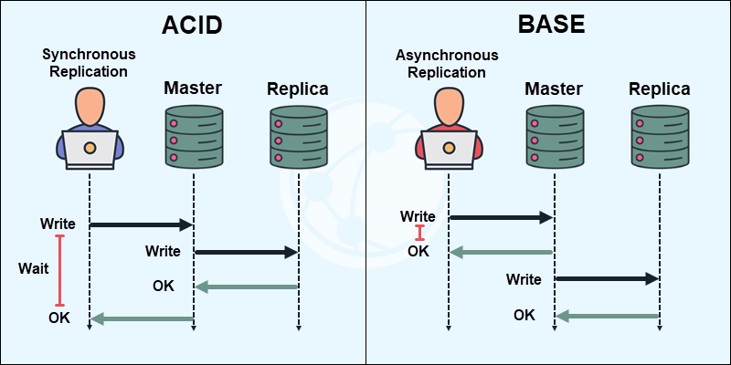

System Design Mastery
Master scalable systems with premium insights
🔄 ACID vs BASE: Two Philosophies of Data Handling
1️⃣ What is a Transaction?
A transaction is a group of database operations that must be treated as one single unit.
Either:
- ✅ All operations succeed → COMMIT
- ❌ Any operation fails → ROLLBACK
Example: Bank Transfer
- 💸 Debit money from Account A
- ➕ Credit money to Account B
- 👉 Both must succeed, or neither should happen
2️⃣ Why Do Transactions Exist?
Transactions exist to ensure data correctness and reliability.
Problems They Solve:
- 🔴 Partial updates
- 🔴 Data corruption
- 🔴 Inconsistent state during failures
👉 Especially critical in financial and critical systems.
3️⃣ What Breaks Without Transactions?
- ❌ Money deducted but not credited
- ❌ Orders placed without payment
- ❌ Inventory reduced without order confirmation
- ❌ Data becomes inconsistent
📌 Real Example:
Payment deducted → server crashes → order not created ❌
4️⃣ Real-World Analogy
Transaction = Bank Transfer 🏦
- 💰 You give money to bank
- 🏧 Bank deposits to receiver
- ↩️ If deposit fails → money is returned
- 👉 No partial success allowed
Two Different Philosophies: ACID → correctness first | BASE → availability & scale first
5️⃣ ACID Properties (Traditional Databases)
ACID = Atomicity, Consistency, Isolation, Durability

🔹 A — Atomicity ("All or Nothing")
Either entire transaction succeeds or entire transaction fails.
Example:
Debit + Credit both happen or neither 👉 No partial work
🔹 C — Consistency
Data always moves from one valid state to another (stays valid before and after).
Examples:
- Account balance never becomes negative
- Database constraints are respected 👉 Data stays valid
🔹 I — Isolation
Concurrent transactions do not affect each other.
Example:
Two users booking same seat → only one succeeds
🔹 D — Durability
Once committed (saved), data is permanently saved.
Example:
Power failure after payment → Data is still there after restart 👉 No data loss
Why ACID Exists:
Because money, correctness, and trust matter.
Use ACID when:
- 💳 Banking systems
- 💰 Payment systems
- 📦 Order management
- 👉 Wrong data = big loss
6️⃣ BASE Properties (Distributed Systems)
BASE = Basically Available, Soft State, Eventual Consistency
🔹 Basically Available
System always responds.
Example:
App works even during failures 👉 No downtime feeling
🔹 Soft State
Data may change over time.
Example:
Like count updates slowly 👉 Temporary inconsistency allowed
🔹 Eventual Consistency
Data becomes consistent later.
Example:
Message delivered after delay 👉 Not instant, but correct later
Why BASE Exists:
Because scale + availability matter more than instant correctness.
Use BASE when:
- 💬 Social media
- 💌 Messaging apps
- 🎯 Recommendation systems
- 📊 Analytics systems
- 👉 Users prefer app working than perfect data
ACID vs BASE Comparison

Database Technology: ACID is used in SQL (relational) databases | BASE is used in NoSQL databases
Connection to CAP Theorem: ACID systems → usually CP | BASE systems → usually AP
7️⃣ When to Use / When NOT to Use Transactions
✅ When to Use Transactions:
- 💳 Payments
- 📦 Orders
- 💸 Bank transfers
❌ When NOT to Use Transactions:
- 📝 Logging
- 📌 Transactions are expensive — use only when needed
8️⃣ Real App Connections
🛒 E-commerce (ACID)
- Create order
- Deduct inventory
- Confirm payment
🎟️ Ticket Booking (ACID)
- Lock seat
- Confirm booking
- Deduct payment
💬 Social Media (BASE)
Like counts, messages, and feeds use eventual consistency for scale and availability.
🎯 Summary
ACID ensures reliable and correct transactions for systems where data accuracy is critical.
BASE ensures scalable and highly available systems with eventual consistency for distributed environments.
Choose based on your system's priorities: correctness (ACID) vs availability (BASE).
💡 Pro Tip
In system design interviews, always clarify what matters more for your specific use case:
- Correctness? → ACID (CP from CAP)
- Availability? → BASE (AP from CAP)
- Most modern systems use hybrid: ACID for critical operations + BASE for non-critical data